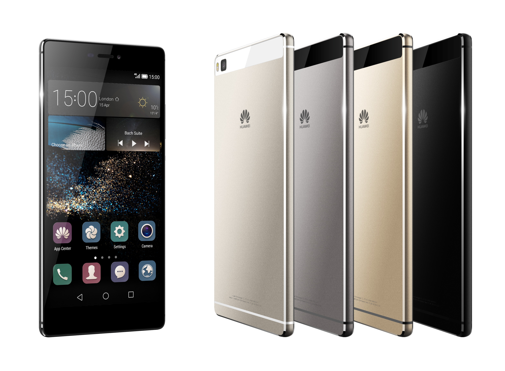
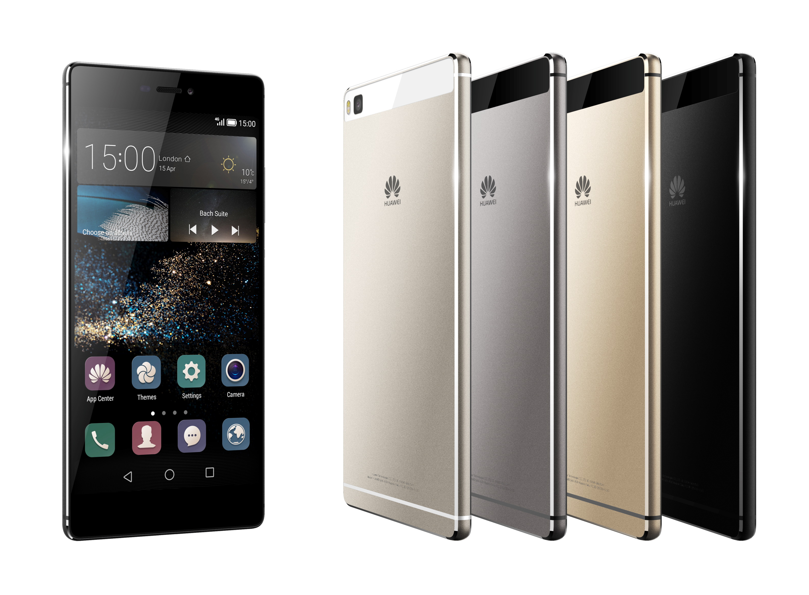
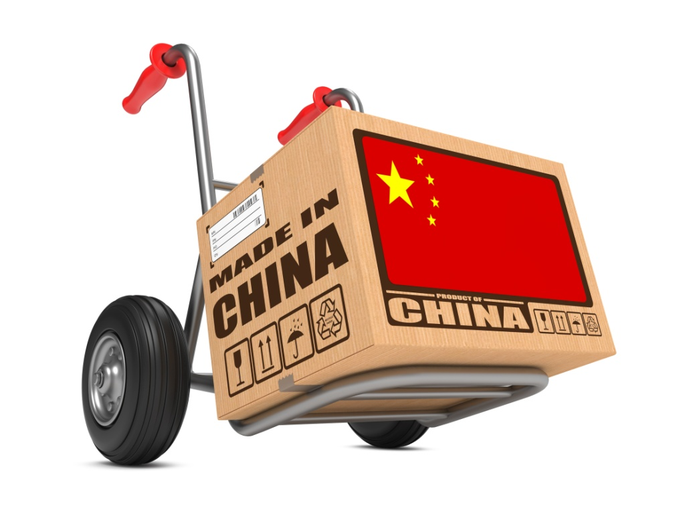
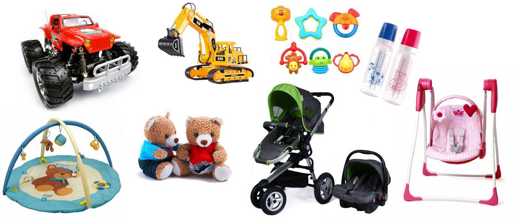
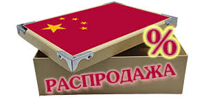

.jpg) 

.jpg)
.jpg)
.jpg)
  АРДОНЬ
ОБЩЕСТВО С ОГРАНИЧЕННОЙ ОТВЕТСТВЕННОСТЬЮ
ТОВАРЫ ИЗ
КИТАЯ
Москва, ул. Авиамоторная, 50, ст.2, пом.56
тел. +7 925 404-53-42
Как найти и доставить товары из Китая оптом?
Выгоды
сотрудничества с китайскими
товаропроизводителями уже давно оценили
бизнесмены из самых разных стран.
Предприятия Поднебесной выпускают
широчайший ассортимент продукции, она
отличается низкими ценами и возрастающим
с каждым годом качеством. Поэтому далеко
неслучайно многие компании хотели бы
наладить взаимовыгодные связи с
китайскими партнерами – но как это
сделать?
Перед компанией, желающей сотрудничать с китайскими товаропроизводителями, сразу появляется целый ряд проблем:
Незнание китайского законодательства.
Иная языковая среда, другая культура.
Сложности поиска необходимых товаров.
Оплата в Китай: паспорт сделки, валютный контроль, курсовые разницы, сверки с таможней и налоговой по НДС.
Проблемы
таможенного оформления грузов. .jpg)
Вопросы быстрой и безопасной доставки закупленного товара
Чтобы найти в Китае нужную
продукцию, закупить ее и доставить в
Россию, необходимо обладать серьезным
знанием китайского рынка и местного
законодательства. Все это приходит со
временем, но именно первые шаги на
китайском рынке оказываются самыми
трудными.
Как избежать возможных потерь, сэкономить силы и время?
Наша компания работает
на китайском рынке с 2007 года, нами
накоплен очень большой опыт сотрудничества
с предприятиями этой страны.
Мы
предлагаем нашим клиентам широкий
спектр услуг:Бесплатный поиск
производителей и партнеров в Китае.
Расчет полной стоимости заказа без
скрытых платежей
Оплата заказов в Китае. Мы сами проводим все расчеты, что очень удобно для наших клиентов.
Растаможивание и доставка закупленных товаров до склада заказчика в Москве и области.
Любые товары из Китая по вашему заказу.
Доставка к дверям вашего офиса или склада!
Почему стоит работать именно с нами?
Нами пройден долгий и сложный
путь внешнеторгового агента. Мы работаем
с крупными транспортными компаниями,
обеспечивающими быструю надежную
доставку грузов, у нас есть собственные
склады и офисы в Китае и серьезные связи
на таможне.
О качестве нашей работы
говорят показатели компании – количество
наших клиентов растет с каждым годом.
Мы ценим нашу репутацию, поэтому очень
ответственно относимся к исполнению
каждого заказа.
Доставка
осуществляется в любой город России!
При авиа доставке в карго-терминале
аэропорта взимается терминальный сбор.
Никаких дополнительных плат либо
издержек вы не несете - стоимость
таможенной очистки и страхование груза
уже включены в цену за 1 кг !
Мы
выдерживаем сроки доставки товара, но
иногда он может немного меняться в
большую либо меньшую сторону. В разумных
пределах. Это стандартные сроки. Время
доставки зависит от региона РФ, куда
направлять товар, в него также входит
время на взаимодействие с поставщиками
по наличию, выкуп товара, доставка до
центра сбора и проверки товара на предмет
брака, подготовка и отправка заказанной
партии. Обычно этап выкупа, формирования,
упаковки, отправки на таможню, таможенной
очистки товара занимает около 3-5 рабочих
дней с момента получения вашей оплаты.
Предоплата по заказу.
Выкупу у поставщика подлежит
только тот товар, за который было внесено
как минимум 70% от общей стоимости по
заказу. Как только произошла оплата и
мы увидели переведенные денежные
средства, мы сразу связываемся с
китайскими фабриками, выкупаем заказ,
проверяем его на качество и готовим к
отправке. Работаем быстро. Соблюдение
сроков доставки заказа есть одно из
основных правил работы нашей компании.
Что
происходит дальше?
Мы выкупаем товар
у китайских поставщиков, после получения
проверяем на качество и брак (не все, а
в зависимости от объема вашей партии и
количества заказанного товара). После
проверки мы делаем фото ваших товаров
и пересылаем вам. Затем вы оплачиваете
оставшиеся 30% стоимости. Пока переводится
оставшаяся сумма, ваша товарная партия
готовится к отправке на таможенный
пост.
Вам не стоит думать о
"растаможке", размере таможенных
платежей, дополнительно подсчитывать
или доплачивать. Мы оплачиваем таможенную
пошлину, товар покидает границу и
отправляется в ваш город.
Официальное
таможенное оформление
У нас есть
надёжная, официальная таможенная
очистка! Обращайтесь к нам!
Для
расчёта стоимости доставки или получения
подробной информации по официальному
таможенному оформлению обращайтесь к
менеджеру любым удобным способом:
онлайн-запрос, телефон, электронная
почта.
Сборный груз из Китая
Мы
можем перевезти Ваш груз сборными
партиями – доставка в Россию мелкогабаритных
грузов различных заказчиков в одном
транспортном средстве. Это позволит
существенно сэкономить на стоимости
доставки из Китая.
Схема
транспортировки сборного груза.jpg)
Мы принимаем грузы клиентов
на склад в Пекине для комплектации
партии
Обрабатываем груз на складе
– дополнительная упаковка по требованию
клиентов
Подготавливаем документы
для транспортировки и таможенного
оформления
Отправляем сборный груз
на границу для таможенной очистки
Производим
таможенную очистку на территории России
Оформляем российские документы для
последующей реализации товара
(обязательное заключение договора)
Доставляем
груз сборника c нашего склада в Хабаровске
в любой город России
Основные
преимущества сборных грузоперевозок
Экономичность
и удобство перевозок, которая достигается
за счет эффективного использования
грузового пространства транспортного
средства. Из-за этого даже авиа доставка
будет дешевле в составе сборного
груза.
Узнать подробную информацию
по отправлению вашего груза сборником
Вы можете, обратившись к менеджеру любым
удобным способом связи.
XiaoMiXiaoMi
MeizuMeizu
HuaweiHuawei
Lenovo
Это самые
популярные бренды смартфонов в Китае.
Обратитесь к нашему менеджеру за
предложением по моделям по интересующему
бренду. Обратите, пожалуйста, внимание,
что мы занимаемся оптовыми поставками
товаров из Китая - минимальный заказ по
весу составляет 30 кг. Но это вовсе не
означает, что нужно заказать 30кг
конкретной модели смартфона - это
минимальный вес ВСЕГО заказа, в который
могут входить любые товары из нашего
каталога.
Почему выгодно купить
оптом китайские смартфоны
Дешевле.
Да, это действительно так. Ни покупателю,
ни продавцу, ни производителю не нужно
платить разные взносы за "громкий"
бренд. Потребитель просто покупает и
пользуется очень качественным смартфоном
по доступной цене. Проблемы, которые
могут возникнуть при реализации китайских
смартфонов, многих отпугивают от данной
продукции - отсутствие сертифицированных
сервисных центров на территории страны.
Но это только кажется большой преградой
на пути к процветающему бизнесу - не
забывайте, что мы работаем с производителями
напрямую и готовы обеспечить ваш бизнес
своевременными поставками комплектующих
и аксессуаров для телефонов и смартфонов
китайских брендов.
Наша компания
готова к сотрудничеству с постоянными
крупными клиентами и новичками в мире
розничной торговли. С нами легко начать
свое дело или сделать свой бизнес
процветающим, ведь мы предлагаем самые
выгодные условия на рынке поставок
товаров из Китая.
Выгодные решения для бизнеса с Китаем
Преимущества
сотрудничества с нами очевидны и были
оценены огромным количеством оптовых
покупателей:
Широкий ассортимент
продукции различных категорий,
изготовленной по новейшим технологиям
на предприятиях, оснащенных современным
оборудованием.
Невысокая цена, которая
сделает ваши товары доступными и
востребованными на потребительском
рынке.
Гибкая система оплаты – чем
крупнее оптовая партия, тем ниже стоимость
единицы товара.
Поставка заказов в
кратчайшие, обоснованные сроки.
Полное
сопровождение товара. Мы занимаемся не
только закупкой заказанных товаров и
их доставкой по адресу, но и таможенным
оформлением и другими процедурами,
связанными с перевозкой из-за рубежа.
Мы
на месте проверяем качество продукции,
отсутствие дефектов и брака, чтобы вы
получали только безупречный товар
высшего класса.
Налаженные и
долгосрочные связи с надежными
производителями из Китая.
Мы постоянно
изучаем спрос и тенденции, поэтому
знаем, что востребовано в настоящее
время. В нашем обширном каталоге вы
найдете только актуальные товары и
последние новинки, которые будут
интересны розничным покупателям.
Компания
производит оперативную доставку оптовых
партий в любой регион России.
Как мы работаем?
Сотрудничество с нами это
всегда выгодно, ведь мы высоко ценим
каждого клиента, практикуем политику
индивидуального подхода к его потребностям
и возможностям, берем на себя ответственность
за товар и решаем все вопросы, связанные
с его доставкой, в том числе и оплачиваем
таможенную пошлину.
Все, что
требуется от вас – выбрать желаемый
товар, оформить заказ и сделать предоплату,
остальное – забота наших специалистов.
После поступления части денежных
средств, мы закупаем у китайских
производителей необходимые товары,
предварительно проверив их качество,
приступаем к подготовке на отправку.
Как только заказчик перечислит оставшуюся
часть денег, мы начинаем заниматься
доставкой оптовой партии, осуществляя
ее сопровождение на всех этапах. Команда
наших специалистов работает быстро,
четко и слаженно, так как оперативность
является одним из основных приоритетов
нашей работы.
Доставка оптовых партий
товара сборным грузом
Чтобы клиент
смог еще больше сэкономить на оптовых
закупках, мы осуществляем доставку из
Китая сборных грузов. Вам не придется
переплачивать, а благодаря большому
количеству клиентов, мы формируем
сборные грузы в кратчайшие сроки. До
полной комплектации товар хранится на
нашем складе в Пекине, поэтому мы
гарантируем клиентам его целостность.
По требованию заказчика мы предоставляем
услуги по дополнительной упаковке
продукции, отправляемой сборной партией.
Воспользовавшись таким предложением,
вы можете значительно сэкономить на
доставке любым видом транспорта, будь
то морские или авиаперевозки.
Наши
приоритеты
Мы постоянно изучаем
рынок товаров и спрос отечественных
покупателей, поэтому наши предложения
это свежие, актуальные и трендовые
товары, последние новинки известных
китайских производителей.
Своим
клиентам мы предлагаем самые выгодные
условия, систему скидок и другие
преимущества.
Сотрудничая с
производителями товаров из Китая, мы
предлагаем самые низкие цены и поставляем
только оптовые партии востребованной
продукции.
Благодаря нам вы сможете
предложить своим покупателям отличный
товар, соответствующий самым высоким
стандартам, по доступной стоимости, что
станет гарантией процветания и успешного
развития вашего бизнеса.
Наша
деятельность направлена на полное
удовлетворение запросов клиентов,
которым мы предоставляем все возможности
для заполнения торговых точек качественными
и популярными товарами различных
категорий.